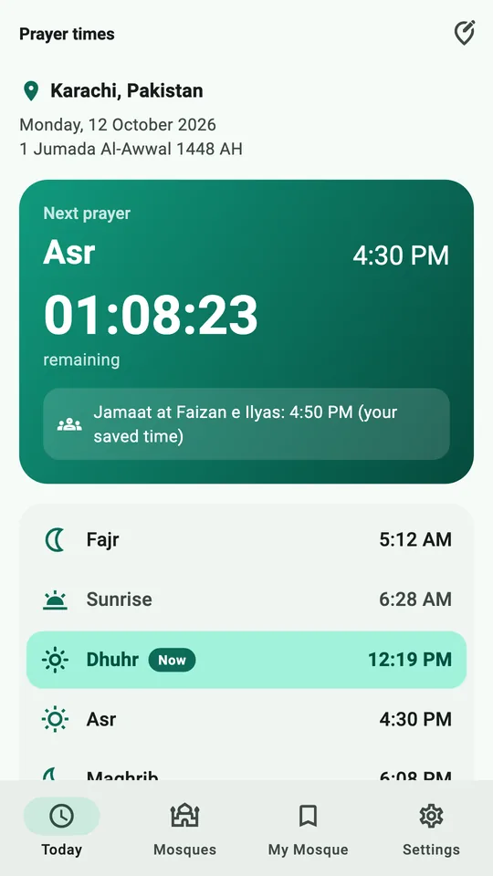
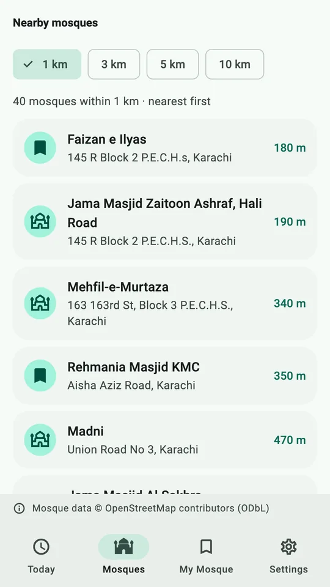
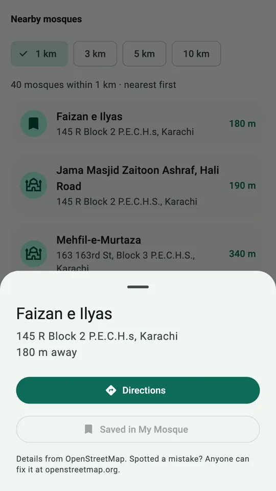
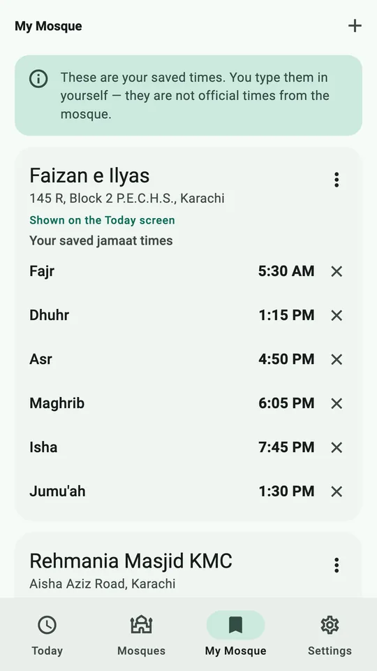
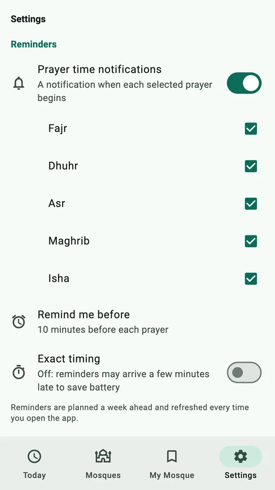
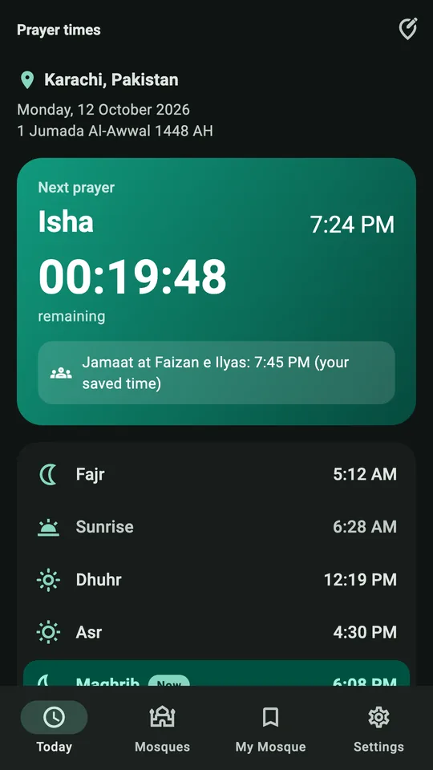
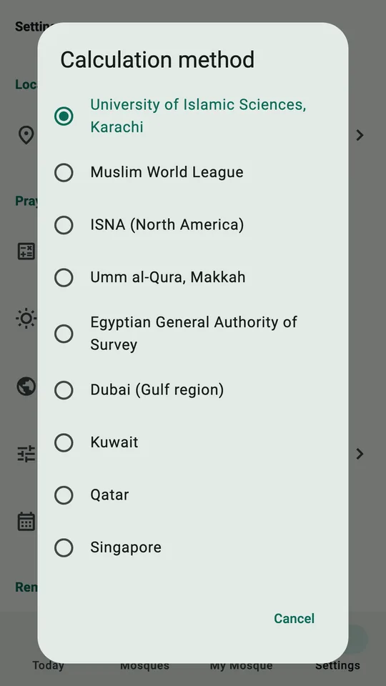
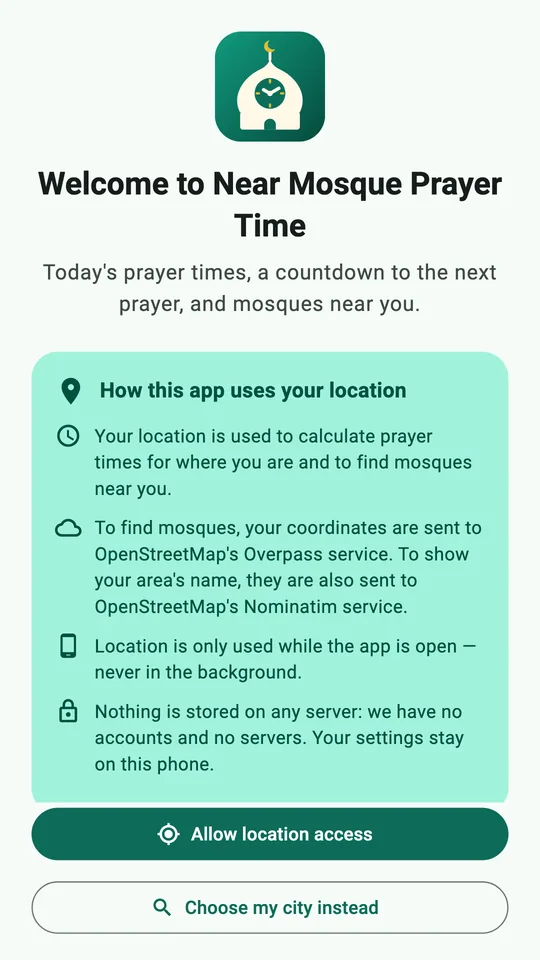

Near Mosque
Prayer Time
Today's prayer times where you are, a live countdown to the next prayer, and mosques near you, in one simple app.

Everything for your daily prayers
Clear, large and easy to read. Anyone can use it without help.
Live countdown
See the next prayer and exactly how long is left, down to the second.
Today's prayer times
Fajr, Sunrise, Dhuhr, Asr, Maghrib and Isha, with the Hijri date. Calculated on your phone, even offline.
Mosques near you
Within 1, 3, 5 or 10 km, nearest first, with one-tap directions in your maps app.
My Mosque
Save the mosques you pray at and type in their jamaat times, including Jumu'ah.
Gentle reminders
Optional notifications at prayer time, and a few minutes before if you like.
Your way
12 calculation methods, Hanafi or Shafi'i Asr, minute adjustments, 12/24-hour clock, light and dark themes.
Take a look
Real screens from the app, showing mosques from OpenStreetMap in Karachi.







Private by design
No account, no ads, no analytics and no tracking. Read the full privacy policy.
Questions
How are prayer times calculated?
On your phone, using well-known astronomical formulas. The default is the University of Islamic Sciences, Karachi method with Hanafi Asr. You can choose Muslim World League, ISNA, Umm al-Qura, Egyptian, Dubai, Kuwait, Qatar, Singapore, Diyanet, Tehran or Moonsighting Committee, and adjust any time by minutes.
Why are the times a few minutes different from my mosque?
Mosques often add a few minutes or use their own timetable. Use Adjust times in Settings to match, and save your mosque's jamaat times in My Mosque.
Where does the mosque list come from?
From OpenStreetMap, the free map that anyone can edit. If a mosque is missing or wrong, you can add or fix it at openstreetmap.org and it will appear in the app.
Are the jamaat times official?
No. Jamaat times in My Mosque are the ones you type in yourself, and the app labels them as your saved times.
Does it work without internet?
Yes for prayer times, the countdown, reminders and My Mosque. Finding nearby mosques and searching for a city need a connection.